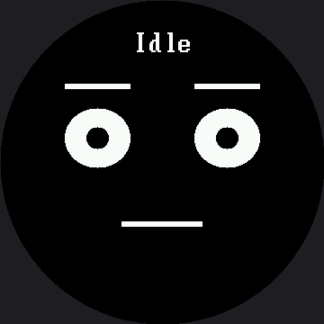

A Face With a Memory¶
The expression menu had no memory. Press A and you get the next emotion, over and over, and the face reacts to your finger the same way no matter what happened ten seconds ago.
Real creatures are not like that. Poke someone who is already annoyed and you get a different answer than poking someone who is asleep.
Give me a mood I can carry around
 Button A pokes me. Button B calms me down. Leave me alone long enough and I get bored, then fall asleep on my own — and what a poke means depends entirely on what I was doing when it arrived.
Button A pokes me. Button B calms me down. Leave me alone long enough and I get bored, then fall asleep on my own — and what a poke means depends entirely on what I was doing when it arrived.
Two Tables Are the Whole Idea¶
A state machine is one of the most useful abstractions in all of computing — vending machines, traffic lights, game characters, and network protocols are all built on it. It needs only two things:
| Part | The question it answers |
|---|---|
| States | What situations can this thing be in, one at a time? |
| Transitions | For each state, which event moves you where? |
Write both as tables and the main loop shrinks to "look up what happens next, then do it." Adding a
whole new mood becomes two rows of data instead of another branch tangled into a growing pile of
if statements.
What Each State Looks Like¶
This first table is the emotion table's column format, reused without change:
# eye_rx eye_ry brow_L brow_R lift mouth x y
POSES = {
"Idle": (36, 33, 0, 0, 0, face.FLAT, 45, 0),
"Curious": (39, 44, -11, 8, 15, face.SMIRK, 45, 0),
"Happy": (36, 36, 0, 0, 8, face.SMILE, 75, 36),
"Annoyed": (36, 18, 18, 18, -8, face.FLAT, 39, 0),
"Asleep": (36, 3, 0, 0, -11, face.FLAT, 21, 0),
}
Notice Curious: one brow at −11 and the other at 8. That single mismatch is what makes it read as interested rather than merely awake.
What Each State Does¶
This is a different question, and it gets its own table. Read a row like a sentence: "from Idle, A leads to Curious, B leads to Annoyed, and after 8000 ms of nobody touching anything, we fall Asleep."
# state A -> ... B -> ... after ms -> ...
TRANSITIONS = {
"Idle": {"a": "Curious", "b": "Annoyed", "timeout": (8000, "Asleep")},
"Curious": {"a": "Happy", "b": "Idle", "timeout": (5000, "Idle")},
"Happy": {"a": "Happy", "b": "Idle", "timeout": (4000, "Idle")},
"Annoyed": {"a": "Asleep", "b": "Idle", "timeout": (6000, "Idle")},
"Asleep": {"a": "Curious", "b": "Curious", "timeout": None},
}
Worth noticing: of the two tables on this page, only one changed when this lab crossed over
from the smaller kit. POSES is full of pixels, so every number in it was multiplied by 1.5.
TRANSITIONS has no pixels in it at all — just state names and millisecond timeouts — so it is
character for character the same table on both kits. A state machine is a fact about behavior,
and behavior does not have a resolution.
Three kinds of event drive the machine, and the third one is what makes the robot feel alive:
| Event | Where it comes from | What it models |
|---|---|---|
a |
Button A | Somebody poked the robot |
b |
Button B | Somebody calmed it down |
timeout |
The clock | Nothing happened for long enough to matter |
A robot that changes on its own, with nobody touching it, is doing something no menu can do.
The Loop Just Follows the Tables¶
while True:
rules = TRANSITIONS[state]
if face.pressed(button_a):
face.wait_for_release(button_a)
go_to(rules["a"], "poke")
elif face.pressed(button_b):
face.wait_for_release(button_b)
go_to(rules["b"], "calm")
elif rules["timeout"] is not None:
after_ms, next_state = rules["timeout"]
if ticks_diff(ticks_ms(), entered_at) >= after_ms:
go_to(next_state, "waited " + str(after_ms) + "ms")
sleep_ms(10)
Notice what that loop does not contain: the word "Happy", the word "Asleep", or any knowledge of what a poke means. All of that lives in the tables.
One Door In, One Door Out

go_to() is the only place in the program that changes state, and it prints every change to the shell. Funnelling every change through one function means there is exactly one line to watch when I end up somewhere you did not expect.
def go_to(next_state, because):
"""The only place in the program that changes state. Funnelling every
change through one function means there is exactly one line to watch
when the face ends up somewhere you did not expect."""
global state, entered_at
print(state, "--", because, "->", next_state)
state = next_state
entered_at = ticks_ms()
draw_state(state)
Here's the starting state:

Press a button — or wait eight seconds — and the machine moves somewhere else.
Where the Caption Had to Move¶
draw_state() calls face.label(name, y=LABEL_Y), and LABEL_Y here is 32, not the smartwatch
kit's default of 30 scaled up to 45. The reason is the same font trap as everywhere else on this
kit: face.label() draws in the 16×32 font here, twice as tall as the smartwatch kit's 8×16, while
every position around it only grew 1.5×. A caption left at the naively-scaled row 45 would paint its
black glyph background all the way down to row 76 — and Curious lifts its eyebrows to row 67, so the
inner tip of one brow would vanish under the name. It would look like a drawing bug and it would
really be a font that refused to scale.
Row 32 puts the caption's bottom edge at row 63, four rows clear of the highest brow this lab ever draws, and the safe circle is still about 159 pixels wide up there — comfortable for the 112 pixels that "Curious" and "Annoyed", the longest names here, actually need.
Draw It on Paper First¶
Five circles, one per state. Fourteen arrows, one per transition, each labelled A, B, or its timeout. That drawing is the two tables above, and it is how engineers design this kind of code before writing any of it.
Doing it on paper will also show you something the code hides: which states are hard to reach, and which ones you can never leave.
Find the Trap
 From Happy, button A leads back to Happy forever. Is that a bug or a personality? Change it to "Annoyed" and see whether a robot that gets tired of being poked feels more alive.
From Happy, button A leads back to Happy forever. Is that a bug or a personality? Change it to "Annoyed" and see whether a robot that gets tired of being poked feels more alive.
Things to Try¶
- Draw the machine on paper — five circles, fourteen arrows — before you change anything.
- Add a "Startled" state: eyes wide, brows way up, mouth open. Give it a 700 ms timeout back to
Curious, and make Asleep + A go to Startled instead. Two rows of data, no new logic — waking a
sleeping robot should surprise it. Pick the brow lift carefully: past 14, the note above
LABEL_Ywarns you the brows start pushing up under the caption. - Decide about the Happy trap described in the tip above.
- Watch the shell while you play. Every transition prints, so you get a written history of the robot's mood — the technique from Trace and Watch, aimed at behavior instead of speed.
- Optimize the redraw.
draw_state()callsface.clear()on every transition, and on this screen that is 129,600 pixels — 259,200 bytes down the SPI wire — so you can watch the wipe happen. Because states change at most a few times a second, that is still a defensible choice. Rewrite it to erase only the boxes that differ between the old pose and the new one, then decide for yourself whether the extra bookkeeping earned its keep. There is no single right answer, and knowing that is the skill.
References¶
- The Emotion Table — the pose format this lab reuses for
POSES - Mode Switching — the memoryless menu this lab is an answer to
- Sleeping Face — the expression the Asleep state is heading toward
- A Face With a Memory on the 1.2" kit — same lesson at 240×240, where
TRANSITIONSis the identical table andface.label()never had to move